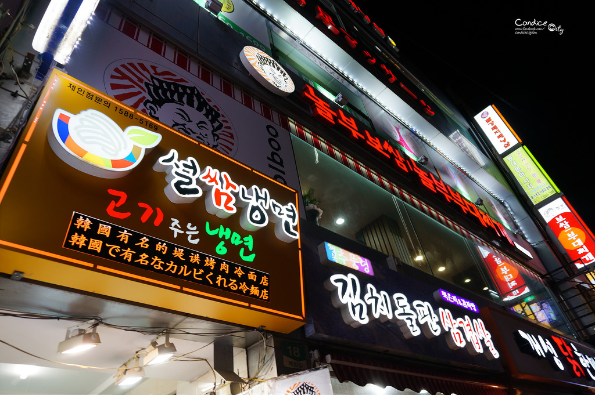

首爾美食介紹
陳玉華一隻雞
地址： 首爾特別市鐘路區鐘路40ka街18 (鍾路5街)
營業時間：10:30~01:00

挪夫部隊鍋
地址：首爾特別市 中區 乙支路6街 18-103
電話：02-2264-7738
營業時間：11:00~23:00
炸雞Mania
地址：首爾特別市中區北倉洞
電話：02-753-2051
Isaac吐司
地址：首爾特別市中區忠武路1街 24-41
電話：05-6959-1086
營業時間：08:00~21:00
釜山美食介紹
釜山烤肋排
地址：釜山市釜山鎮區釜田洞 516-68
電話：051-816-8803
營業時間：17：00～02：00
松亭3代豬肉湯飯
地址：釜山廣域市釜山鎮區釜田洞255-15
電話：051-806-181
營業時間：00:00~23:00
東萊銅盆蒸排骨
地址：釜山 東萊區 忠烈大路181街47-5
電話：051-556-0948
營業時間：11:00～02:00
男子烤腸
地址：부산부산진구중앙대로680번가길33(2樓)
電話：051-817-0023
營業時間：17:00-01:00
荒謬的生肉
地址：釜山廣域市前區中央大路680番街38號(2樓)
電話：051-807-2687
營業時間：11:00～23:00
金剛部隊鍋
地址：釜山市釜山鎮區釜田洞519-2
電話：051-804-8582
營業時間：10：00～23：00